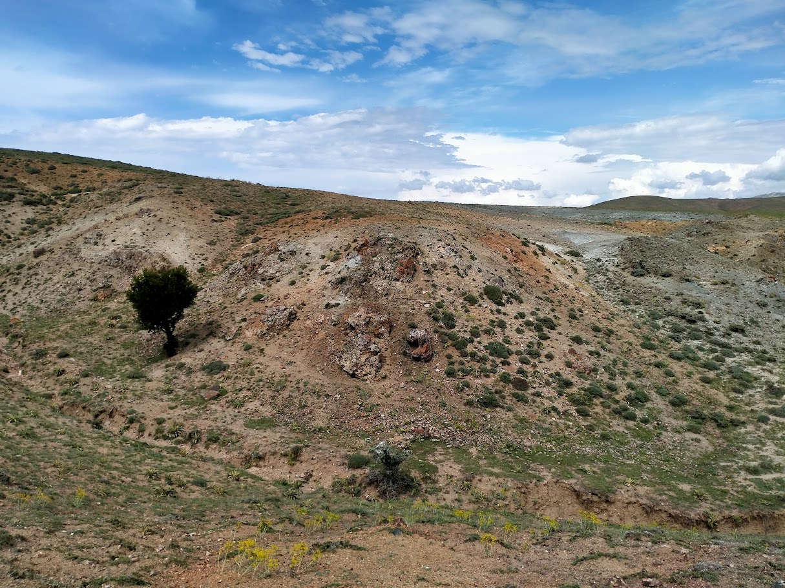
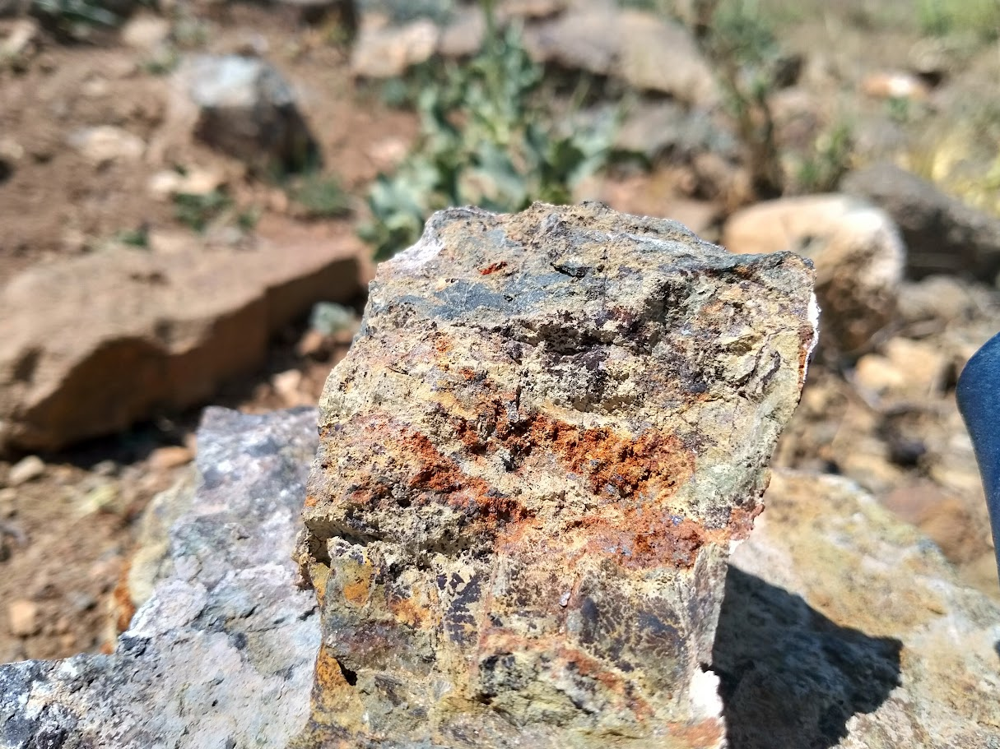
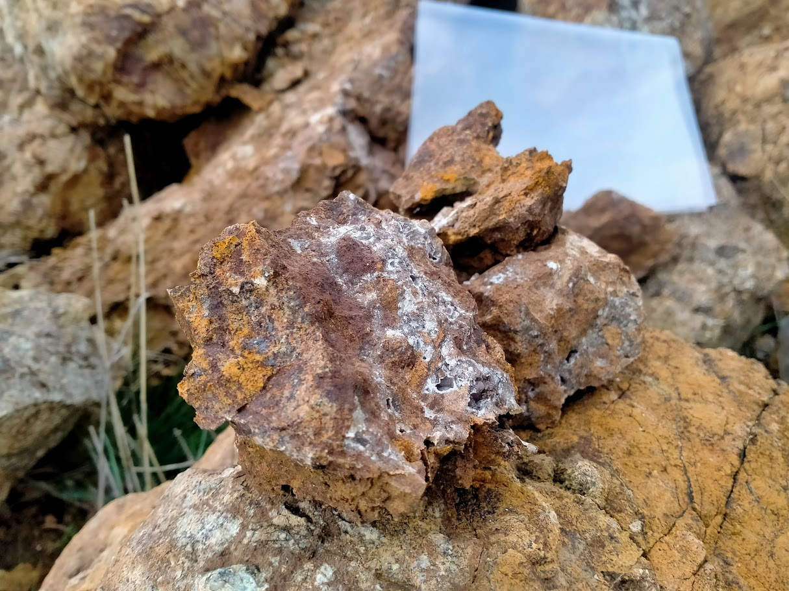
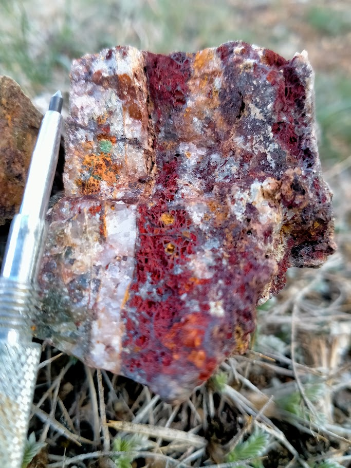

Anadolu mineralize kuşağının kalbinde yapısal kontrollü bir değerli metal hedefi.
Kırşehir projesi, Akpınar, Kırşehir İli, Orta Anadolu'da yer almaktadır. Lisans alanı [ X.XXX ] hektar olup [ jeolojik formasyon tanımı ] ile ilişkili altın ve gümüş mineralizasyonunu hedeflemektedir.
İlk arama çalışmaları, değerli metal sistemleriyle tutarlı [ sayı ] öncelikli jeofizik anomali tespit etmiştir. En güçlü anomali bölgelerinde gerçekleştirilen toprak örnekleme programları [ X m ] üzerinde [ X ppb Au ] değerlerine ulaşmıştır.
Proje hâlihazırda [ arama / ön fizibilite / geliştirme ] aşamasındadır. Bir sonraki çalışma evresini [ sondaj / jeofizik takibi / vb. ] oluşturmaktadır.




[ Jeolojik açıklama ekle — kayaç türleri, yapısal kontroller, mineralizasyon stili, yatak modeli ]
Saha, birden fazla belgelenmiş değerli ve baz metal oluşumuna ev sahipliği yapan jeolojik açıdan aktif bir ortam olan geniş Orta Anadolu kristalen kompleksinin bir parçasıdır.
Jeolojik açıklamalar ve arama sonuçları yayımlanmadan önce DOKA'nın lisanslı jeolog raporlarından alınan gerçek teknik verilerle değiştirilmelidir.